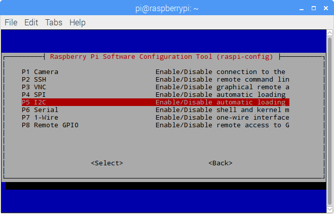
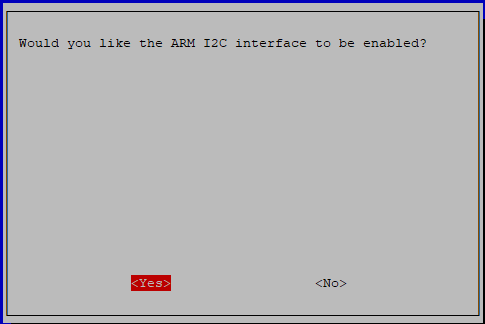

注釈
こんにちは、SunFounderのRaspberry Pi & Arduino & ESP32愛好家コミュニティへようこそ！Facebook上でRaspberry Pi、Arduino、ESP32についてもっと深く掘り下げ、他の愛好家と交流しましょう。
参加する理由は？
エキスパートサポート：コミュニティやチームの助けを借りて、販売後の問題や技術的な課題を解決します。
学び＆共有：ヒントやチュートリアルを交換してスキルを向上させましょう。
独占的なプレビュー：新製品の発表や先行プレビューに早期アクセスしましょう。
特別割引：最新製品の独占割引をお楽しみください。
祭りのプロモーションとギフト：ギフトや祝日のプロモーションに参加しましょう。
👉 私たちと一緒に探索し、創造する準備はできていますか？[ここ]をクリックして今すぐ参加しましょう！
I2C設定
ステップ1: Raspberry PiのI2Cポートを有効にします（既に有効にしている場合はこのステップをスキップしてください。不明な場合は続けてください）。
sudo raspi-config
3 インターフェイスオプション

I4 I2C
<Yes>, では <Ok> -> <Finish>
ステップ2: i2cモジュールがロードされているか確認します。
lsmod | grep i2c
次のようなコードが表示されれば成功です（数字は異なる場合があります）。表示されない場合は、 sudo reboot でRaspberry Piを再起動してください。
i2c_dev 6276 0
i2c_bcm2708 4121 0
ステップ3: i2c-toolsをインストールします。
sudo apt-get install i2c-tools
ステップ4: I2Cデバイスのアドレスを確認します。
i2cdetect -y 1 # Raspberry Pi 2以降のバージョン用
i2cdetect -y 0 # Raspberry Pi 1用
pi@raspberrypi ~ $ i2cdetect -y 1
0 1 2 3 4 5 6 7 8 9 a b c d e f
00: -- -- -- -- -- -- -- -- -- -- -- -- --
10: -- -- -- -- -- -- -- -- -- -- -- -- -- -- -- --
20: -- -- -- -- -- -- -- -- -- -- -- -- -- -- -- --
30: -- -- -- -- -- -- -- -- -- -- -- -- -- -- -- --
40: -- -- -- -- -- -- -- -- 48 -- -- -- -- -- -- --
50: -- -- -- -- -- -- -- -- -- -- -- -- -- -- -- --
60: -- -- -- -- -- -- -- -- -- -- -- -- -- -- -- --
70: -- -- -- -- -- -- -- --
I2Cデバイスが接続されている場合、そのデバイスのアドレスが表示されます。
ステップ5:
C言語ユーザー向け: libi2c-devをインストールします。
sudo apt-get install libi2c-dev
Pythonユーザー向け:
仮想環境の有効化。
注意
有効化する前に、仮想環境を作成していることを確認してください。詳細はこちらを参照してください: 仮想環境の作成.
Raspberry Piを再起動するたびや、新しいターミナルを開くたびに、仮想環境を有効化するために次のコマンドを再度実行する必要があります。
source myenv/bin/activate
仮想環境が有効化されると、コマンドラインのプロンプトの前に環境名が表示され、仮想環境内で作業していることが示されます。
I2C用のsmbusのインストール。
sudo pip3 install smbus2
仮想環境の終了。
作業を完了し、仮想環境から退出したい場合は、単純に次のコマンドを実行します:
deactivate
これにより、システムのグローバルPython環境に戻ります。